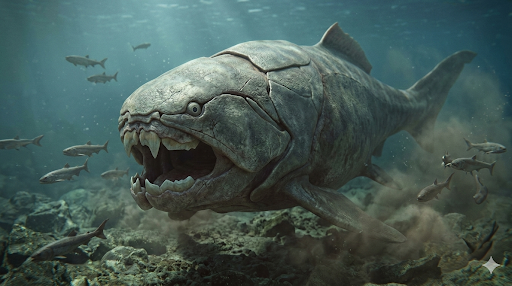

דנקליאוסטיוס
The Armored Terror: Dunkleosteus terrelli

תיק מחקר: נתונים מורפולוגיים
תקופת פעילות
382 עד 358 מיליון שנה
תור הדבון המאוחר (Late Devonian)
מסה גופנית (משקל)
3 עד 4 טונות
המקבילה הימית לפיל אפריקאי בוגר
ממדים (אורך)
6.0 עד 8.8 מטרים
הגולגולת לבדה שקלה מעל טון
תזונה
טורף-על קניבלי
ניזון מכרישים, אמוניטים, ואף מדנקליאוסטיוסים צעירים.
סיווג אנטומי
פלקודרם (Placoderm)
החולייתנים הראשונים בהיסטוריה שפיתחו לסתות אמיתיות ושריון עצם חיצוני.
01 // ניתוח אטימולוגי נרחב
| החלק בשם | שפת מקור | פירוש ומשמעות היסטורית |
|---|---|---|
| Dunkle- | אנגלית | דייוויד דנקל (David Dunkle) הוקרה לאוצר הראשי במוזיאון להיסטוריה של הטבע בקליבלנד, שהקדיש את הקריירה שלו לחילוץ המאובנים מהסלע השחור. |
| -osteus | יוונית (Osteon) | עצם (Bone) מתאר את החומר ממנו עשוי השריון הכבד של הגולגולת. המשמעות המלאה: **"דג-העצם של דנקל"**. |
02 // תולדות הגילוי: מפלצות האספלט
ההתנגשות עם התעשייה (1867-1873)
הסיפור מתחיל ב**פצלי קליבלנד** באוהיו. כורי פחם ומהנדסים שחפרו דלק עבור המהפכה התעשייתית נתקלו בגושי אבן שחורים וקשים להחריד ששברו את מקדחיהם. כשהם ביקעו אותם, נחשפו לוחות שריון שנראו כמו "שדי אבן". ב-1867 חובב הטבע **ג'יי טרל** חילץ את השברים הראשונים, וב-1873 הציג הפלאונטולוג **ג'ון ניוברי** את התיאור המדעי שהבהיר: מדובר במפלצת ימית בעלת ראש משוריין.
מבצע ההצלה ב-I-71 (1965)
פריצת הדרך האדירה התרחשה במהלך סלילת הכביש המהיר **I-71** באוהיו. דחפורים שסללו את הדרך חשפו "בית קברות" עצום של גולגולות דנקליאוסטיוס בנחל ביג קריק. צוותי המוזיאון עבדו במרוץ נגד השעון לפני שהאספלט יכסה את הממצאים. מבצע ההצלה הזה סיפק למדע עשרות גולגולות **שלמות** שאפשרו לראשונה להבין את המבנה התלת-ממדי המדויק של היצור.
תעלומת הגוף החסר: למה אין שלד שלם?
למרות שנמצאו מאות גולגולות, מעולם לא נמצא מאובן של גוף שלם. הסיבה היא **ביולוגית**: הראש והחזה היו עשויים מלוחות עצם קשיחים (השתמרו מצוין), אך שאר הגוף היה עשוי מ**סחוס רך** (בדומה לכרישים).
איך יודעים שהוא דג?
כבר ב-1873 ג'ון ניוברי זיהה מבנים של **קשתות זימים** (Branchial arches) בתוך פנים הגולגולת. המדענים משתמשים ב**אנטומיה השוואתית** מול קרוב משפחתו הקטן, ה-*Coccosteus*, כדי לשחזר את הזנב והסנפירים. מחקר מ-2023 טוען שהגוף היה כנראה קצר ורחב יותר ממה שחשבנו.
הישגים ביומכניים מפלצתיים
-
1
מערכת ארבעת המנופים: מנגנון לסת שאפשר פתיחת פה תוך 50 אלפיות השנייה, יצירת ואקום ששאב את הטרף פנימה בעוצמה אדירה.
-
2
גיליוטינה בהשחזה עצמית: לא היו לו שיניים. לוחות העצם השתפשפו זה בזה והשחיזו את עצמם ללהבים חדים כתער באופן תמידי.
-
3
נשיכת-על (4,400N): עוצמת נשיכה השווה לזו של טי-רקס. כוח מספיק כדי לרסק שריון של אמוניטים או לחצות כריש לשניים בביס אחד.
03 // אקולוגיה וקריסת העידן
אסטרטגיית ה"מעונות" (Nurseries)
פרטים צעירים נמצאו בנפרד מהבוגרים באזורי מים רדודים. המדע משער כי זו הייתה טקטיקה הישרדותית למניעת **קניבליזם** מצד הבוגרים. הדנקליאוסטיוס היה כה אכזרי שאפילו בני מינו היוו טרף פוטנציאלי.
הכחדת האנגנברג (Hangenberg)
לפני כ-358 מיליון שנה, שינויים קיצוניים ברמות החמצן באוקיינוסים הובילו להיעלמותו. הוא הוחלף על ידי דגים קלים ומהירים יותר, אשר ויתרו על השריון הכבד לטובת זריזות – אבותיהם של הכרישים המודרניים.